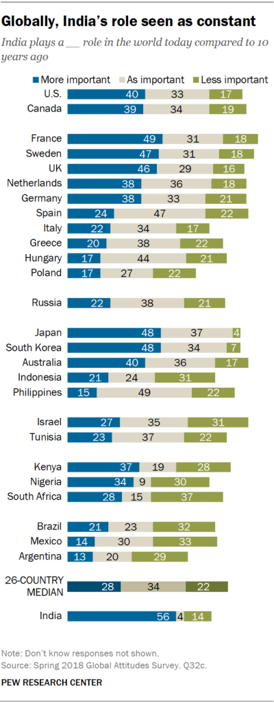
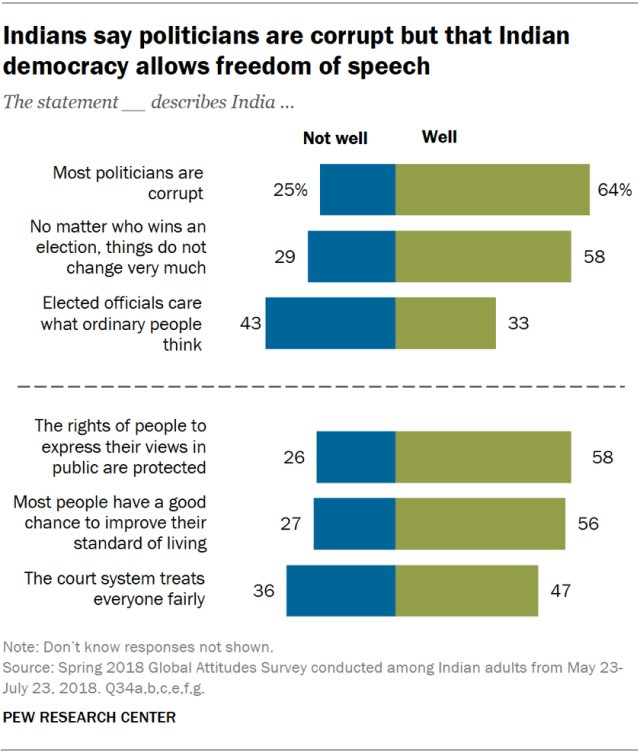

| WORLD POLITICS | INDIAN POLITICS | TN POLITICS |
|---|
Wednesday’s mass shooting in San Jose, California, is a grim reminder of the need for Congress to take action on America’s gun violence epidemic, President Joe Biden said in the hours after the ordeal.
“Every life that is taken by a bullet pierces the soul of our nation. We can, and we must, do more,” Biden said in a statement.
A lone gunman opened fire Wednesday morning at a rail yard serving Santa Clara County and killed eight people. The gunman, an employee of the Valley Transportation Authority, was among the dead, authorities said.
In February 2020, a month before the virus was declared a pandemic and Britain imposed its first lockdown, Johnson dismissed COVID-19 as “the new swine flu,” Dominic Cummings told lawmakers.
“The prime minister regarded this as just a scare story,” Cummings said in testimony that blasted the government’s response to the pandemic. He added that Johnson’s aides viewed the prime minister’s attitude as, “It’s swine flu, don’t worry about it.
I’m gonna get (Chief Medical Officer) Chris Whitty to inject me live on TV with coronavirus ― then everyone realizes it’s nothing to be frightened of.”“That would not help actual serious planning,” Cummings added.
It wasn’t clear whether Johnson may have made his comments in jest.But the postscript was certainly no joke. The month after Johnson made the dismissive remarks, he contracted COVID-19 (unintentionally) and nearly died.
Humour and ridicule were a key part of Moscow's response when the UK said it was "highly likely" that Russia was behind the poisoning of former spy Sergei Skripal and his daughter, Yulia, in Salisbury.
Russian officials and media figures have since tried to turn the English phrase "highly likely" into a mocking catchphrase that implies Russia is being blamed for everything with the flimsiest of evidence.
They have enlisted a range of popular figures from English literature, such as Agatha Christie's Hercule Poirot and Conan Doyle's Sherlock Holmes, to ridicule British allegations of Russian involvement in the poisoning which they denounce as unfounded.
Joe Biden is disaster. Let's face it,
Trump told thousands of his supporters in similar speeches in Ocala in Florida and Macon in Georgia, two battleground states.
The president also said that he cannot think about losing to such an "incompetent" person.
The Biden family is a criminal enterprise, and you know it, and so do I. In fact, they sort of make Crooked Hilary Clinton look like amateur, if you think about it.
he alleged.
Referring to the Twitter account of White House Press Secretary Kayleigh McEnany being shutdown for some time by the micro-blogging site, the president said that here's no freedom of press.
Yet all of this is being covered up by the media and big tech (companies). You saw that you see that,
The ruler of Qatar, one of the handful of Arab nations on good terms with Tehran, met with President Donald Trump for talks expected to touch on Doha`s offer to help ease tensions between the US and Iran.
Two years after siding with Saudi Arabia in a diplomatic and economic offensive against Qatar, Trump welcomed here on Tuesday Tamim Bin Hamad Al-Thani to the White House as if nothing had ever happened.
It`s a great honour to be with the amir of Qatar - a highly respected man, a real leader in a large part of the world and a very important part of the world. And we`ve known each other a long time. We`ve been friends for a long time,
the President said as he sat alongside Al-Thani in the Oval Office, reported Efe news.

Accelerating world oil demand and reduced supply from the OPEC could push crude prices up to $60 a barrel before the end of the year,
according to a report from Barron`s.The report cites research from Citigroup senior energy analyst Eric Lee, who previously called for a bear market in oil when the price was above $100. The decline in recent weeks to a low of just over $44 for Brent crude, the international benchmark, has made Lee a short-term bull, Barron`s notes.
YS Sharmila, sister of Andhra Pradesh Chief Minister YS Jagan Mohan Reddy, is likely to float a new political party in today's 'Sankalpa Sabha' in Telangana's Khammam.
Talks of her forming a new party have been doing rounds for a while. Sharmila is likely to make a political entry into Telangana politics ahead of the 2023 state Assembly polls.
The Assembly polls for 119 seats in Telangana state are scheduled to be held in 2023.
NCP leader Dilip Walse Patil on Monday replaced Anil Deshmukh as the new home minister of Maharashtra.
Deshmukh resigned on Monday from his post, hours after the Bombay High Court ordered a CBI probe into corruption charges leveled against him by formerMumbai police commissioner Param Bir Singh.
Singh, in his plea filed on March 25, sought a CBI probe against Deshmukh who, he claimed, had asked police officers, including suspended cop Sachin Waze, to extort Rs 100 crore from bars and restaurants.
Deshmukh has denied any wrongdoing.

A number of celebs - a popular singer, an actor and a actor-director joined Trinamool Congress in poll-bound West Bengal on Thursday.
Popular singer Aditi Munshi, actor Subhadra Mukherjee and actor-director Dheeraj Pandit joined TMC during the day at Trinamool Bhavan.
Aditi said only TMC supremo Mamata Banerjee thinks or works so much for people in the performing arts and allied fields.
The singer said that she will be at the party's service in whichever way it deems fit. Subhadra, a popular small screen actor, said only Banerjee can save the state from the "fascist BJP turning it into another Uttar Pradesh.
The situation has taken a 180-degree turn from when she left for jail, after taking a vow, dramatically thumping Jayalalithaa's memorial three times.
Chief Minister E Palaniswamy (EPS), who fell at her feet in gratitude after she handpicked him for the top post, has turned against her and has in fact shut the door on her.
He also removed her as AIADMK general secretary. O Paneerselvam or OPS, the man who rebelled against Sasikala's leadership of the AIADMK, is now with EPS and a part of the AIADMK government as his deputy.
Sasikala's nephew TTV Dhinakaran is also out of the AIADMK. He won the RK Nagar assembly constituency that fell vacant after Jayalalithaa's death and is now heading the AMMK, which managed close to 5 per cent votes in the previous election, but without the AIADMK's two-leaf symbol.
It is, by itself, not a good option for Sasikala. In the end a good manipulator such as Sasikala is bound to trigger new problems within TN politics.
I am willing to sacrifice my life for the sake of Tamil people,
the 69-year-old announced with a dramatic mix of idealism, daring, sacrifice and emotion befitting the "Thalaiva (leader)" of movies.
Even after Rajinikanth met with district secretaries of his Rajini Makkal Mandram on Monday, not many were hopeful. When he sought more time, they thought their leader was setting them up for disappointment.
But Rajinikanth has played the "will he, won't he" game too long. Some believe it may be too late in the day, given his age and health.Given the right circumstances, Rajinikanth's entry may shake up Tamil Nadu parties and alliances as they prepare for the Tamil Nadu polls due in five months.
The veteran is seen to be close to the BJP's ideology. Rajinikanth's views are similar to the BJP's. We would appeal to him to support us,
said BJP spokesperson Narayanan Thirupathi.
BJP has become the talking point for all political parties either to criticise or appreciate, he said while responding to a query on the allegations levelled by DMK Chief M K Stalin that the saffron party was behind the recent protest meet organised by AIADMK.
Noting that a situation has arisen wherein the BJP has become the 'focal point' in the present politics of Tamil Nadu, he told reporters that the AIADMK was claiming that BJP was behind the DMK and the latter accused his party of operating the ruling AIADMK.
|  |  |

|